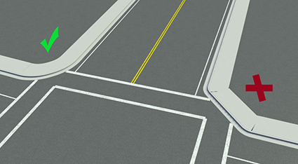
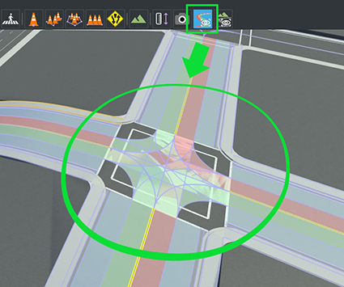
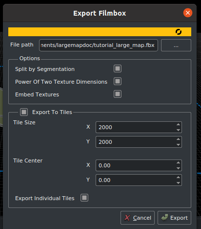

在 RoadRunner 创建大地图
RoadRunner 是推荐的软件，用于创建要导入 Carla 的大地图。本指南概述了 RoadRunner 是什么，在构建大地图时需要考虑的事情，以及如何导出自定义的大地图，以便导入 Carla。
RoadRunner简介
RoadRunner是一个交互式编辑器，可以让您设计3D场景来仿真和测试自动驾驶系统。它可以用来创建道路布局和伴随的opdrive和几何信息。在这里了解更多关于RoadRunner的信息。
RoadRunner是MATLAB校园许可的一部分，因此许多大学可以提供无限制的学术访问。检查一下你的大学是否有访问权限。如果有任何关于可访问性的问题或麻烦，请联系automated-driving@mathworks.com。还有一个试用版。
参加 Carla 排行榜的每个人都可以获得RoadRunner的许可证。点击这里了解更多信息。
开始之前
您需要安装RoadRunner。您可以按照Mathworks网站上的安装指南进行操作。
在RoadRunner中创建一个大地图
如何在RoadRunner中构建一个大地图的细节超出了本指南的范围，但是，在RoadRunner文档中有视频教程。
如果您正在构建带有高程的大地图，则建议地图的最大尺寸为20km 乘 20km。大于这个值的地图可能会导致 RoadRunner 在导出时崩溃。
在RoadRunner中导出一个大地图
下面是从RoadRunner导出自定义大地图的基本指南。
一旦你在RoadRunner中制作了你的地图，你就可以导出它了。请注意，道路布局在导出后不能修改。导出前，请确保:
- 地图以(0,0)为中心，以确保地图可以在虚幻引擎中正确地可视化。
- 映射定义是正确的。
- 地图验证是正确的，密切关注连接和几何形状。

一旦地图准备好了，点击opdrive预览工具按钮来可视化opdrive道路网络，并给一切最后一次检查。

笔记
_opdrive预览工具_使它更容易测试地图的完整性。如果路口有任何错误，点击‘Maneuver Tool’，然后点击‘Rebuild Maneuver Roads’。
通过点击世界设置工具并拖动蓝色边界框的边缘以包含您想要导出的整个区域，确保选择完整的地图进行导出。当它准备好了，点击Apply World Changes。

当您准备导出时:
1. 导出 .fbx文件:
- 在主工具栏中选择,选择
File->Export->Firebox (.fbx)
__2.__在弹出的窗口中:
- 检查以下选项:
- Split by Segmentation: 通过语义分割对网格进行划分，改善行人导航。
- Power of Two Texture Dimensions: 提高了性能。
- Embed Textures: 确保纹理嵌入到网格中。
- Export to Tiles: 选择瓷砖的大小。Carla 可以使用的最大尺寸是2000 x 2000。
- Export Individual Tiles: 生成在 Carla 中流式传输大地图所需的单个块。

3. 导出 .xodr文件:
- 在主工具栏中选择
File->Export->OpendDRIVE (.xodr)
笔记
确保 .xodr 和 .fbx 的文件名称相同。
下一个步骤
现在可以将地图导入 Carla 了。有关详细信息，请参阅导入大地图指南。
如果你对这个过程有任何疑问，那么你可以在 论坛 上提问。